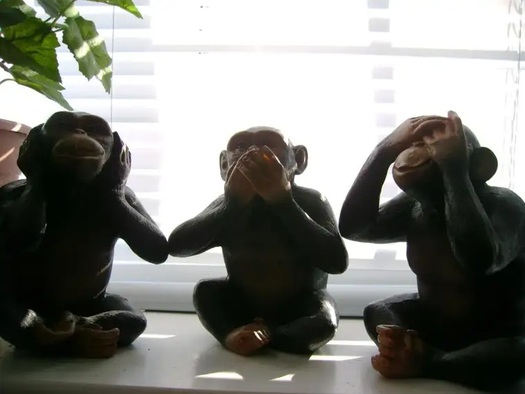

Last week I mentioned that I wanted to circle back to something. They are words that have been ringing in my head for over a week now: “I couldn’t un-see them.” Having heard these four words uttered in an unsuspecting moment, they engulfed my heart, and I now can’t un-hear them.

{kind=link}
Ramona lost her voice that morning and couldn’t be on, but Lauren Muzyka, who first brought Ramona and me together, graciously agreed to fill in. Lauren also wrote the foreword for the book, and has a vested interest in women who seek abortions and workers in the industry through her advocacy organization, Sidewalk Advocates for Life. The non-profit she helped found exists to create a more peaceful, prayerful presence on the sidewalks before abortion facilities.
We were talking about abortion workers and Lauren’s sidewalk work when the host, Alyssa, broke into a personal story to better exemplify the fruits of those who pray in these places, even when — especially when — it seems they are whispering their petitions in vain.
“I’m the mother of two children, but both dead to abortion,” she began, “and I just remember the people on the sidewalk, they said they were praying for me.” Alyssa admitted that at the time, she felt nothing but negativity toward the people praying, and that she “gave them a gesture I needed to later confess.”
“The thing is,” she continued, “I so believed the world and the Planned Parenthood message that they could solve the problem…I was certain they had the answer.” She recounted that as she looked across the way and saw the people praying, “I thought, ‘You don’t have the answer. Don’t you understand?'” The answer was Planned Parenthood. They would set things right.
“But the thing is,” Alyssa continued, “I could not un-see them in my life. It maybe took ten or more years for their prayers to come to fruition in me, but they did.”
In time, Alyssa was healed, but not by Planned Parenthood. The healing came, instead, from God and the Catholic Church. She continued, “So I always tell people on the sidewalk, ‘Thank you for just saying you were praying for me, and just being there, and even though we weren’t able to save the child, I couldn’t un-see you and you always stayed with me in those prayers.'”
Alyssa added that the prayers of those who had shown up on the sidewalk “was like a candle they lit interiorly;” the last light she had to hang onto as she moved into the darkness ahead.
As Alyssa talked, a rush of emotions welled up inside me. My notebook near, I grabbed it to write down the words I needed to hear, and wanted to remember: “I couldn’t un-see you.”
How many times have we prayed and thought our words might be going out into an uncaring, empty universe? How many times have we shown up and wondered, does this really matter? Is anyone listening? Will this even make one iota of a difference?
Just last Wednesday, while our Mothers Loving Mothers group gathered on the sidewalk before our state’s only abortuary, a man with a swagger and slurred words of one who’d had a few too many to drink approached us. His left hand gripped a large walking stick, his eyes held contempt. “Why don’t you go home and pray there? You aren’t doing any good here. Why are you doing this?!” he yelled. He started to walk away, but then, not satisfied, he came back, emphasizing once more, “You’re wasting your time here. Just go home.”
Although I’m sure some of us wanted to say something to defend ourselves or try to appeal to his heart, in certain moments no words suffice. I think we knew that he was under the influence, and that trying to argue with him wouldn’t have made a difference.
And maybe some of us believed him. Maybe some of us wondered if perhaps he, though drunk, was the clearest-thinking of all; that maybe what we were doing there really was a complete waste of time.
I think most of us who pray there believe our efforts do count or we wouldn’t keep showing up. But proof doesn’t always come. More often than we would like, the woman goes into the facility even when her face reveals that she would rather be anywhere but there. And sometimes, she seems indignant, set on the only course she sees.
It’s natural for us to want some sign of life, some flicker of hope to let us know our presence, and our prayers, are not only purposeful, but maybe, have the capacity to turn a heart toward Love.
Alyssa’s words came as a reminder to me that even when only words of hate and gestures of anger are returned for our prayers and presence on the sidewalk downtown, we don’t know what’s really going on in the hearts of those who enter the facility, and we don’t know how we might be offering hope, even without any visible sign.
Faith requires that we show up anyway, but it’s nice to receive something more from time to time, like the glimmer from Alyssa. Years ago, out on a sidewalk, someone stood there praying for her, and in the recesses of her soul brought hope. Eventually, that remembrance of their presence helped bring her life around toward Love. And because she dared to share that on her own live radio show one Sunday afternoon, she has brought hope to my heart as well.
Maybe this now can be hope to you. I hope so.
To hear the whole interview, find the podcast here.
Q4U: When have you received an unexpected flicker of hope?